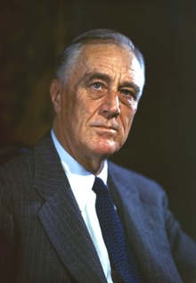

Compromise
With economic failure, comes a new deal
The New Deal
Before the Presidency of Franklin D. Roosevelt, economic crises was seen across the nation. Deflation occurred which made the tasks in repaying debts impossible to accomplish. Unemployment in the United States went as high as 25%. There was no insurance on deposits at banks. Therefore, when thousands of banks closed which depositors lost all their savings. Unfortunately, at the time, there was no Social Security nor public unemployment insurance for any financial recovery. Towards the end of the 1930's, after previous failed attempts for recovery, Franklin D. Roosevelt steps in to propose The New Deal.
In its core, The New Deal was a series of reforms including public work projects, financial reforms, federal programs, and regulations in response to the Great Depression. Notable federal programs passed on through Congress included the Civil Works Administration (CWA), the Farm Security Administration (FSA), the National Industrial Recovery Act of 1933 (NIRA) and the Social Security Administration (SSA) in which all are being put into effect to today. The purpose behind the programs was to provide support for the unemployed, farmers, youth and the elderly as well as safeguards on the banking industry and changes to the monetary system.